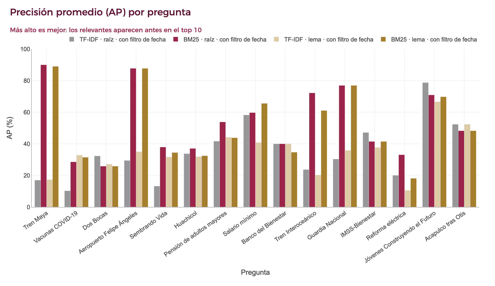

1
Divide
Cada conferencia, en fragmentos que se entienden solos: 127,739 en total
Ejemplo con Dos Bocas
Mañanera del 27 de junio de 2022, fragmento 68
Lo probamos con 15 preguntas sobre obras y programas del gobierno
 P1Tren Maya
P1Tren Maya P10Tren Interoceánico
P10Tren Interoceánico P12IMSS-Bienestar
P12IMSS-Bienestar P13Reforma eléctrica
P13Reforma eléctrica P14Jóvenes Construyendo el Futuro
P14Jóvenes Construyendo el Futuro P15Acapulco tras Otis
P15Acapulco tras OtisCada conferencia, en fragmentos que se entienden solos: 127,739 en total
Ejemplo con Dos Bocas
Mañanera del 27 de junio de 2022, fragmento 68
Los 10 fragmentos más útiles para la pregunta y el periodo
Ejemplo con Dos Bocas
«refinería de Dos Bocas en Tabasco», 2019 a 2022
Personas, organizaciones, lugares, fechas y montos
Ejemplo con Dos Bocas
Persona: Rocío Nahle
Monto: 50 mil millones de pesos
Reglas arman la tabla con lo extraído, sin IA generativa; cada dato lleva su frase
Ejemplo con Dos Bocas
«50 mil millones de pesos están presupuestados con ese propósito» · 13 de marzo de 2019
CÓMO MEDIMOS LA BÚSQUEDA
Pregunta por pregunta
13
BM25 supera a TF-IDF y la diferencia no es casualidad (p = 0.014); entre raíz y lema puede ser azar (p = 0.07)

90 %
en Tren Maya
9 de los 10 primeros son relevantes
25.8 %
en Dos Bocas
Solo 4 de los 10 primeros